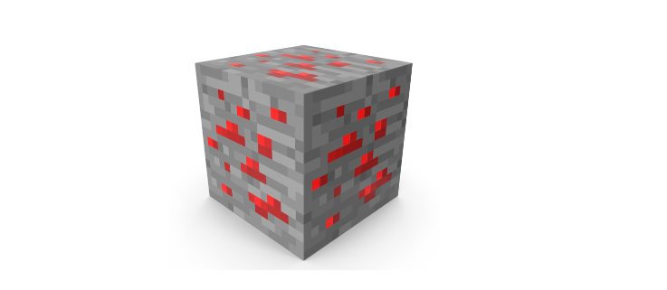
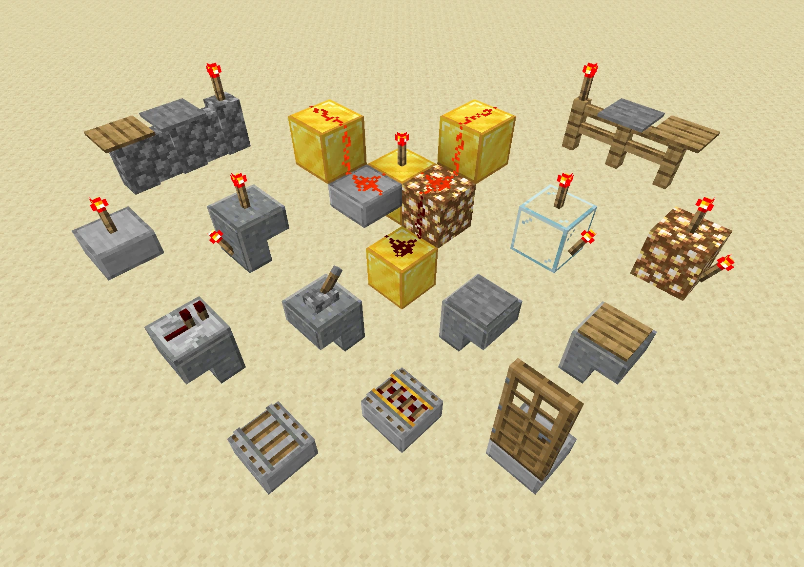
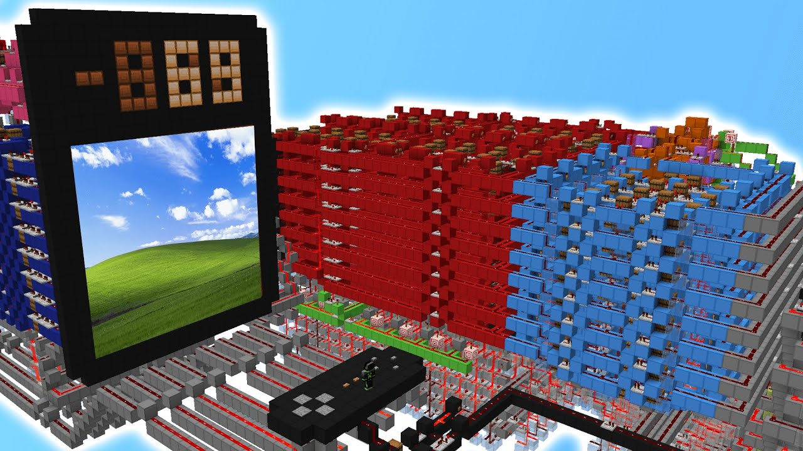

One of the most advanced mechanics in this sandbox game is redstone. It can be used to create many different complex
contraptions such as a calculator, advanced deathtraps and even a working computer.
Click and Drag to see more....



Simple Uses of Redstone
Some simple examples of Redstone usage include sorting items, transporting players, and creating automatic doors.
When placed on the ground, redstone dust becomes redstone wire, which can transfer power from a redstone torch or a
switch, such as a lever or button. This setup can activate various items like doors, pistons, note blocks, rails,
and traps, making Redstone an essential tool for automation and innovation within the game.
Contraptions
Redstone can also be used to create more complex mechanisms like clocks, gates, and pulse extenders, allowing for
the creation of intricate systems that perform specific tasks. Redstone doesn't interact well with water, similar to
real life electrical circuits, but it is heavily relied upon in the late game for large projects, such as massive
automatic farms and sophisticated item sorting systems. Items like the redstone repeater, calibrated sculk sensor,
observer, and tripwire hook are commonly used in Redstone contraptions. These components help players create
intricate systems that add depth and functionality to their builds, showcasing the versatility and creativity that
Redstone brings to Minecraft.
Redstone also plays a crucial role in creating player traps and defense mechanisms. By using pressure plates,
tripwires, and dispensers, players can set up automated defenses to protect their bases from mobs and other players.
Additionally, Redstone can be used to build automated transportation systems, such as minecart railways and piston
powered elevators, making travel within the game more efficient and enjoyable. The possibilities with Redstone are
virtually limitless and push the boundaries of a 'game' .